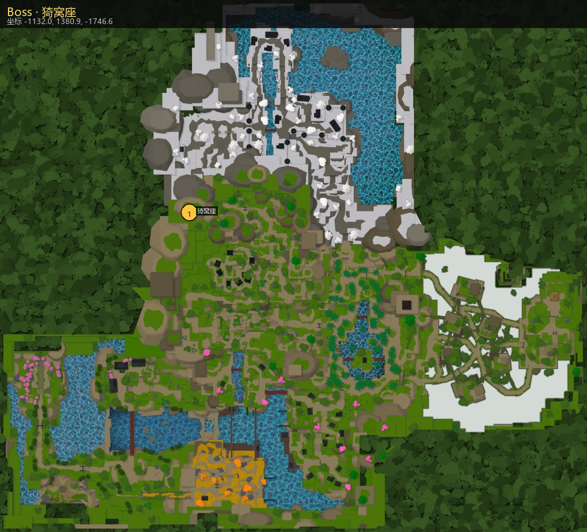

猗窝座
Akazo · Akazo
坐标 -1131.97, 1380.92, -1746.56
击杀后掉落宝箱：世界事件宝箱
Akazo · Akazo
坐标 -1131.97, 1380.92, -1746.56
击杀后掉落宝箱：世界事件宝箱

The Shockwave Demon. Every technique he ever studied, compressed into fists that break the air first.
| 项 | 值 |
|---|---|
| 生命 | 3000 |
| 普攻伤害 | 47.45 |
| 格挡值 | 26 |
| 对格挡伤害倍率 | 0.8 |
| 伤害缩放系数 | {'Annihilation Type': 6.006000000000001, 'Compass Needle': 7.865000000000001, 'Flashing Willow': 5.577000000000001, 'Demon Core': 11.440000000000001} |
| 装备 / 武器 | — |
| 刷新冷却 | 300 秒 |
区域：多区域 / 活动
来自 NpcDataTable.Skills（模块路径）。专属技包 / 柱技 / 邪术大招为该 Boss 主要压制手段；普攻、冲刺、格挡为通用底盘。
| 说明 | 模块 |
|---|---|
| 普攻 / 近战连段 | Base/Combat |
| 格挡 | Base/Blocking |
| 冲刺 | Base/Dash |
| 邪术技组 · Akazo | EvilArtNpcs/Akazo |
| 邪术大招 · Akazo | EvilArtUltimates/Akazo |
| 氏族技 · 不屈意志 | Clan/Indomitable Will |
| 掉落 | 概率 | 保底 |
|---|---|---|
| Annihilation Type | 10% | 保底 35 |
| 文 | 450 | — |
| 经验 | 1000 | — |
| 猗窝座·下装 | 5% | — |
| 猗窝座·上衣 | 5% | — |